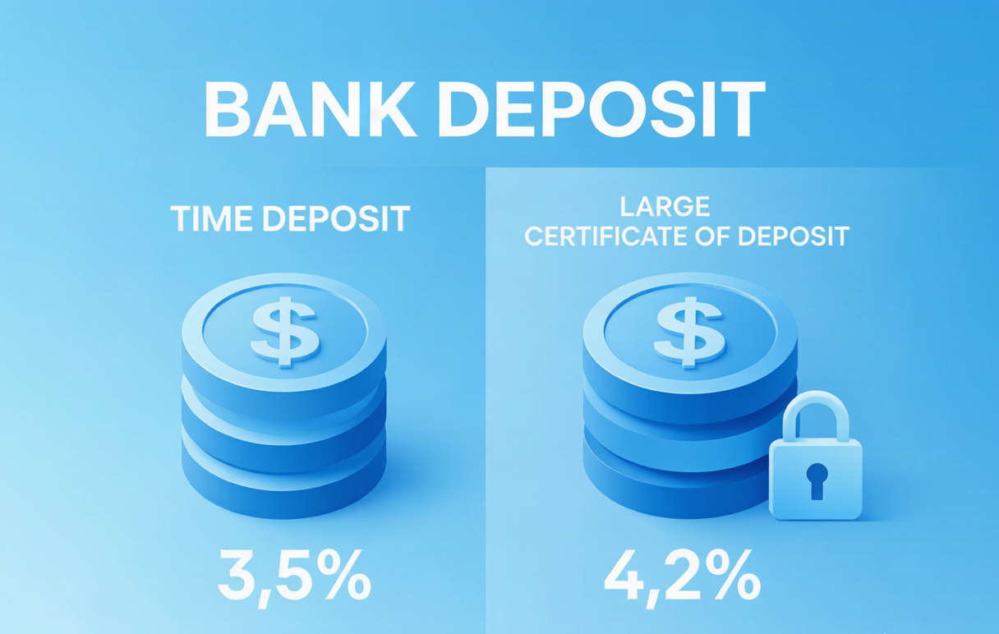
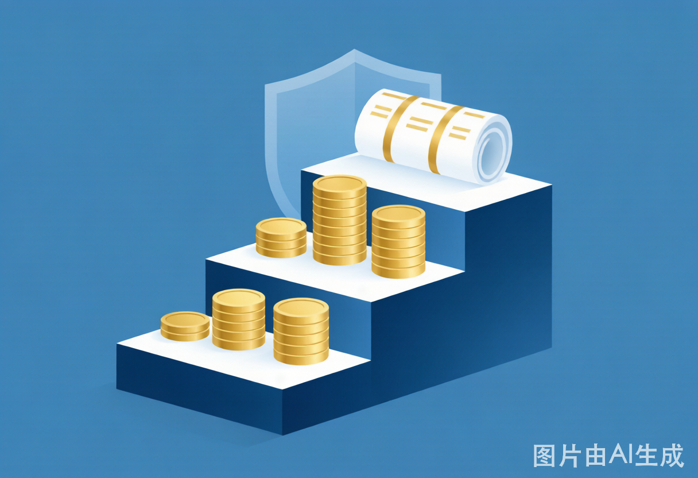

2025年六大国有银行存款利率对比：大额存单、定期存款哪款最划算？附各行最新利率表
2025年六大国有银行最新存款利率一览表，定期存款vs大额存单全面对比，附存款最优策略：这样存利息多拿30%。
**摘要：** 2025年银行存款利率再次下调，3年期定存已跌破2.5%。本文汇总六大国有银行最新利率，深度对比定期存款与大额存单，教你用对策略，同样100万每年多拿3000元利息。
2025年银行存款利率又降了！最新利率一览表
2025年3月，六大国有银行（工、农、中、建、交、邮储）再次集体下调存款利率，这是**2023年以来的第7次降息**。
六大国有银行最新存款利率（2025年4月执行）
| 银行 | 3个月 | 6个月 | 1年 | 2年 | 3年 | 5年 |
|---|---|---|---|---|---|---|
| 工商银行 | 1.25% | 1.45% | 1.65% | 1.95% | 2.35% | 2.40% |
| 农业银行 | 1.25% | 1.45% | 1.65% | 1.95% | 2.35% | 2.40% |
| 中国银行 | 1.25% | 1.45% | 1.65% | 1.95% | 2.35% | 2.40% |
| 建设银行 | 1.25% | 1.45% | 1.65% | 1.95% | 2.35% | 2.40% |
| 交通银行 | 1.30% | 1.50% | 1.70% | 2.00% | 2.40% | 2.45% |
| 邮储银行 | 1.30% | 1.50% | 1.70% | 2.00% | 2.40% | 2.45% |
**发现：** 六大行利率几乎一致，但**交通银行**和**邮储银行**各期限均略高0.05个百分点。100万存3年，交行比工行多拿**1,500元**利息。
股份行和城商行利率更高（但风险也更高）
如果你愿意承担一点点银行风险（虽然极小），股份行和城商行的利率明显更高：
| 银行类型 | 代表银行 | 3年期定存利率 | 风险等级 |
|---|---|---|---|
| 六大国有行 | 工行/农行/中行等 | 2.35% | 几乎无风险 |
| 股份制银行 | 招商/兴业/中信等 | 2.50%-2.70% | 极低风险 |
| 上市城商行 | 宁波/江苏/南京银行等 | 2.70%-2.90% | 低风险 |
| 非上市城商行/农商行 | 各地地方银行 | 2.90%-3.20% | 低风险+ |
⚠️ **重要提示：** 根据《存款保险条例》，**50万元以内**的存款，即使银行破产，也100%赔付。超过50万的部分，理论上存在风险。如果你有100万要存，建议**分两家银行各存50万**。
六大国有银行利率对比：到底差多少？
很多人问："六大行利率基本一样，我该选哪个？"
细节差异对比
| 对比项 | 工商银行 | 农业银行 | 中国银行 | 建设银行 | 交通银行 | 邮储银行 |
|---|---|---|---|---|---|---|
| 3年期定存 | 2.35% | 2.35% | 2.35% | 2.35% | **2.40%** | **2.40%** |
| 大额存单（3年） | 2.60% | 2.60% | 2.60% | 2.60% | **2.65%** | **2.65%** |
| APP体验 | ⭐⭐⭐⭐⭐ | ⭐⭐⭐⭐ | ⭐⭐⭐⭐ | ⭐⭐⭐⭐⭐ | ⭐⭐⭐ | ⭐⭐⭐ |
| 网点密度 | 最高 | 最高 | 高 | 高 | 中 | 最高（县域最强） |
| 客服质量 | ⭐⭐⭐⭐ | ⭐⭐⭐ | ⭐⭐⭐⭐ | ⭐⭐⭐⭐ | ⭐⭐⭐⭐ | ⭐⭐⭐ |
**结论：**
- 如果你追求**最高利率**：选**交通银行**或**邮储银行**
- 如果你追求**网点便利**：选**工商银行**或**农业银行**
- 如果你追求**手机银行体验**：选**工商银行**或**建设银行**
大额存单值不值得买？2025年发行量和利率分析
**大额存单**，顾名思义，就是"大额"才能买的存单——起购金额**20万元**。
大额存单 vs 普通定存：到底差多少？
以100万元、3年期为例：
| 产品类型 | 利率 | 3年总利息 | 灵活性 |
|---|---|---|---|
| 普通定期存款（3年） | 2.40% | ¥72,000 | 提前支取按活期计息（损利息） |
| 大额存单（3年） | 2.65% | ¥79,500 | **可转让**，急用钱时可以卖掉 |
| 差额 | +0.25% | **+¥7,500** | 大额存单胜 |
**结论：** 如果你有20万以上的闲置资金，且确定3年内不用，**大额存单比普通定存更划算**，3年能多拿0.75%的总收益。
2025年大额存单发行量分析
2025年Q1，各大银行大额存单发行量同比下降**23%**。原因是：**银行不缺存款了**，不需要用高利率的大额存单来揽储。
**这导致两个结果：**
- 大额存单**供不应求**，很多银行需要抢购（每月1号、15号开放额度）
- 大额存单的利率也在下降（2024年初3年期大额存单还有2.9%，现在只有2.65%）
**实操建议：** 买大额存单，建议在**每月初**（1-5号）关注银行APP，通常有新额度释放。
大额存单转让功能：急用钱时怎么卖掉？

大额存单最大的优势是**可转让**——急用钱时，不用像普通定存那样"提前支取损利息"，而是可以把存单转让给别人。
转让操作流程（以工行为例）
- 打开工商银行APP → 存款 → 大额存单 → 我的存单
- 选择要转让的存单 → 点击"转让"
- 设置转让利率（通常比原利率低0.1%-0.3%，更容易卖出）
- 等待其他投资者接手
**转让时效：** 通常1-7天内能卖出，急用钱的话，建议把转让利率设得低一点（如比挂牌利率低0.2%），能当天卖出。
**注意：** 不是所有大额存单都支持转让，购买前一定要确认**"可转让"**标识。
定期存款的3个陷阱：自动转存、提前支取、存款保险
陷阱一：自动转存利率更低
很多人定存到期后，懒得去银行转存，选择"自动转存"。
**问题：** 自动转存的利率，通常比**柜台/APP手动转存**的利率低**0.2-0.3个百分点**。
**正确做法：** 定存到期前7天，关注银行APP，手动操作转存，能多拿一点利息。
陷阱二：提前支取全部按活期计息
定期存款如果提前支取，**全部金额**都按活期利率（约0.25%）计息，而不是"存了多久按多久的利息"。
**举例：** 你存了100万3年定期，利率2.4%。存了2年半后急用钱，全部提前支取——利息不是按2.5年算，而是全部按**0.25%活期**算，亏大了！
**正确做法：** 如果不确定资金什么时候用，建议**分笔存**（如100万分成4笔25万，分别存1年、2年、3年、5年），需要钱时只取一笔，其他继续享受定存利率。
陷阱三：以为"银行存款都100%安全"
**真相：** 存款保险只保**50万以内**。如果你在某家小银行存了200万，这家银行破产了，你最多只能拿回50万，剩下150万要靠银行清算资产来赔（可能拿不回全部）。
**正确做法：** 超过50万的存款，一定要**分散到多家银行**。
中小银行存款利率更高，安全吗？
2025年，很多中小银行（城商行、农商行、村镇银行）的3年期定存利率仍在**2.9%-3.2%**，比国有大行高0.5-0.8个百分点。
安全评估
| 银行类型 | 代表银行 | 3年期利率 | 安全性评估 |
|---|---|---|---|
| 国有六大行 | 工行、建行等 | 2.35%-2.40% | ⭐⭐⭐⭐⭐ 几乎无风险 |
| 股份制银行 | 招商、兴业等 | 2.50%-2.70% | ⭐⭐⭐⭐⭐ 极低风险 |
| 上市城商行 | 宁波、江苏、南京银行等 | 2.70%-2.90% | ⭐⭐⭐⭐ 低风险 |
| 非上市城商行 | 各地地方银行 | 2.90%-3.10% | ⭐⭐⭐ 需要注意 |
| 村镇银行 | 各地村镇银行 | 3.00%-3.30% | ⭐⭐ 高风险（参考河南村镇银行事件） |
**建议：** 如果是**上市城商行**（如宁波银行、江苏银行），安全性还是有保障的，可以存。但如果是**非上市的地方小银行**，建议存款不超过**50万**（存款保险全额赔付上限）。
结构性存款是存款还是理财？风险大吗？

很多人去银行存钱，被柜员推荐"结构性存款"，说是"保本的"。
**真相：** 结构性存款**不是普通存款**，它是一种"存款+衍生品"的组合产品——大部分资金存为普通存款（保本），小部分资金投资衍生品（如汇率、股指期权）。
结构性存款 vs 普通定存
| 对比项 | 普通定存 | 结构性存款 |
|---|---|---|
| 本金安全 | 100%安全 | 通常保本（但要看条款） |
| 收益范围 | 固定利率 | 浮动收益（0%-最高收益） |
| 提前支取 | 可以（损利息） | 通常不可以 |
| 存款保险 | 保障 | 只有存款部分保障 |
**结论：** 如果你追求**确定性收益**，买普通定存或大单存单。结构性存款适合"希望博取更高收益、但能接受收益为0%"的投资者。
2025年存款最优策略：这样存利息多拿30%
策略一：阶梯存钱法（最适合工薪族）
将一笔资金分成5份，分别存1年、2年、3年、4年、5年定期。每年都有一笔到期，既享受了长期存款的高利率，又保持了流动性。
**举例：** 100万分5份，每年有20万到期，可以随时用，不用钱就继续转存。
策略二：大银行+小银行组合
将存款的**70%**放在六大国有行或股份制银行（安全第一），**30%**放在上市城商行（博取更高利率）。
策略三：大额存单优先
只要有20万以上闲置资金，优先买**可转让大额存单**。利率比定存高，急用钱时还能转让，一举两得。
常见问题 FAQ
**Q：2025年存款利率还会降吗？**
A：**大概率还会降。** 央行在2025年仍有降息空间（当前10年期国债收益率已跌破2.0%，历史经验显示存款利率会跟随国债收益率变动）。如果有3年以上不用的钱，建议尽快锁定当前利率，越早存越划算。
**Q：钱放在余额宝和存银行，哪个好？**
A：余额宝本质是**货币基金**，2025年Q1七日年化收益约**2.0%**，比1年期定存（1.65%）高，但比3年期定存（2.35%）低。**结论：** 3年以上不用的钱，存3年定期；随时可能用的钱，放余额宝或货币基金。
**Q：在一家银行存超过50万，真的有风险吗？**
A：对于六大国有行和全国性股份制银行，**实际上破产概率极低**（政府不会让它倒）。但对于**地方性小银行**（尤其是村镇银行），2022年河南村镇银行事件已经证明——存款保险之外的部分，确实有损失风险。建议超过50万的资金，**分散到2-3家银行**。
*本文数据来源于六大国有银行官网2025年4月执行利率，各地分行可能有细微差异，请以当地银行实际执行利率为准。*
*存款有风险，选择中小银行前请充分评估其财务状况。*